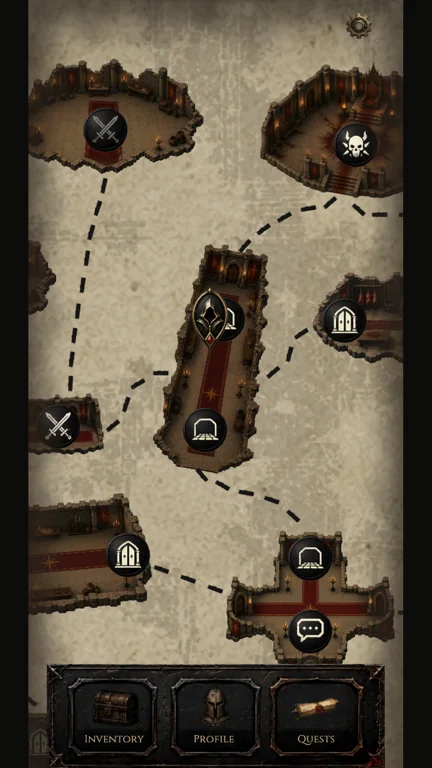
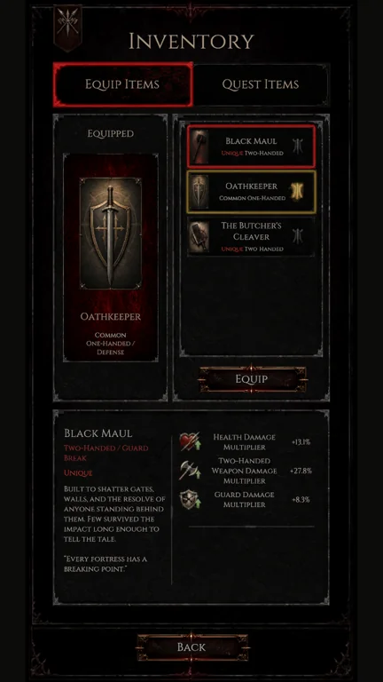
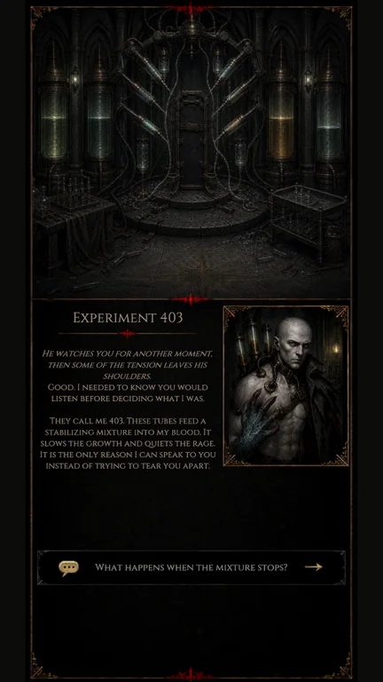
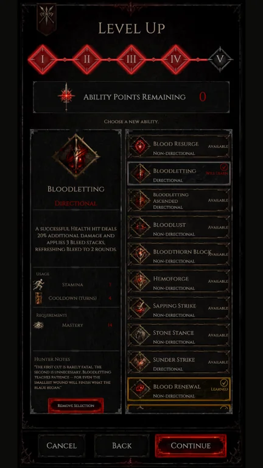
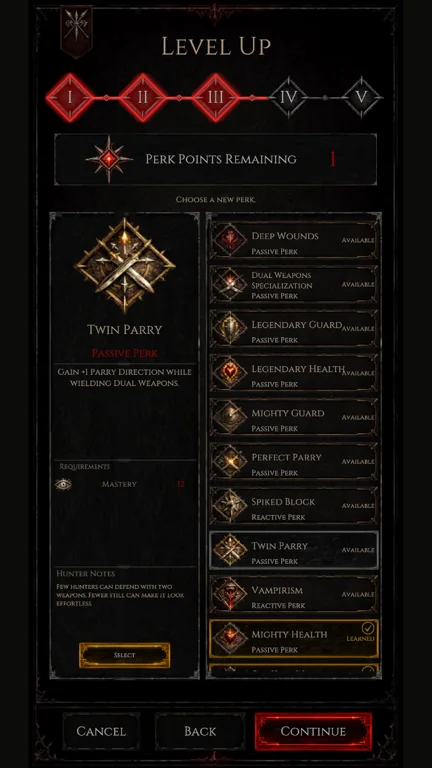

Читати супротивникаRead your opponent
Обирай напрямки атаки й захисту. Вирішуй, коли блокувати, коли парирувати та на що витратити сили.Choose attack and defense directions. Decide when to block, when to parry, and where to spend your resources.
SOLO DEVELOPER · UNITY · MOBILE
Світ пам’ятає
твої звички.The world remembers
your habits.
Похмура покрокова RPG про тактичні дуелі, власний бойовий стиль і таємниці занепалого ордену мисливців.A dark turn-based RPG about tactical duels, finding your own fighting style, and the secrets of a fallen hunters’ order.
Гра в розробці · Кадри поточної версіїIn development · Screens from the current version
ПРО ГРУTHE GAME
Обирай напрямки атаки й захисту. Вирішуй, коли блокувати, коли парирувати та на що витратити сили.Choose attack and defense directions. Decide when to block, when to parry, and where to spend your resources.
Повторювані дії дають ворогу досвід. Власні рішення доводиться переглядати, а його поведінку — спостерігати.Repeated actions give the opponent experience. Watch its behavior and reconsider the choices that have become predictable.
Поєднуй зброю, атрибути, перки та здібності. Розвивай героя навколо тактики, яка цікава саме тобі.Combine weapons, attributes, perks, and abilities. Build a character around the tactics you enjoy.
БЕЗ СЮЖЕТНИХ СПОЙЛЕРІВA LOOK INSIDE
Натисни, щоб роздивитисяSelect an image to take a closer look





ПУБЛІЧНА WIKIPUBLIC GAME GUIDE
Знайомство з дуелями, ресурсами, розвитком героя та світом Carnage Club.Explore the duels, resources, character progression, and world of Carnage Club.
АВТОРСЬКА РОЗРОБКАSOLO DEVELOPMENT
Я розробляю Carnage Club як цілісний проєкт: проєктую й реалізую бойові системи, адаптивних супротивників, прогресію, спорядження та взаємодії кампанії. Окрема частина роботи — інструменти, що допомагають розвивати гру.I develop Carnage Club as a complete project: designing and implementing combat, adaptive opponents, progression, equipment, and campaign interactions. Development tools are another part of making the game practical to build and evolve.
Новини розробки та історія створення гриDevelopment updates and the story behind the game
Стежити в LinkedInFollow on LinkedIn